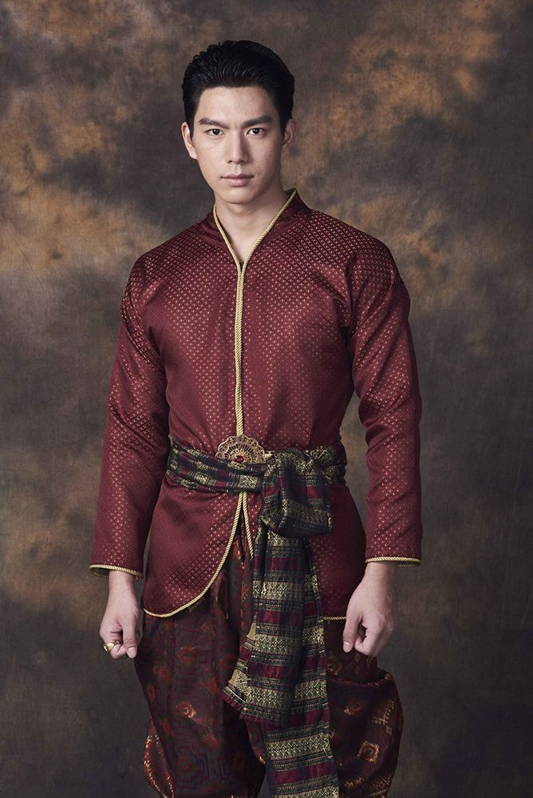

Bandi and Mirzai
Men often wear traditional jackets with the dhoti. The jackets come in different styles. For instance, in the Malwa region, the Bandi is worn by men. It is light and sleeveless and aims at being worked in warm weather. It is always well-embroidered or patterned. The mirzai is a longer jacket, more ideally worn in the cooler months of the Bundelkhand region. It is usually made of heavier materials like wool or velvet in black or white. It adds a formal touch to the whole attire.